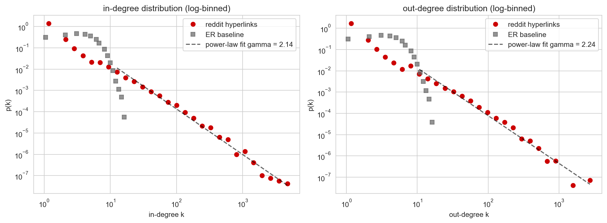
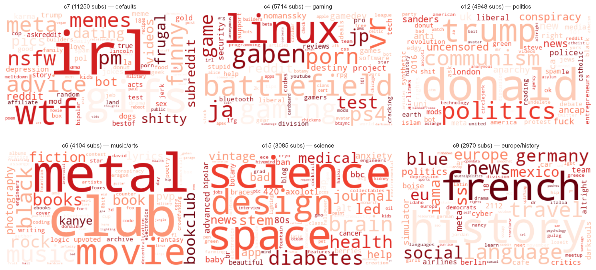
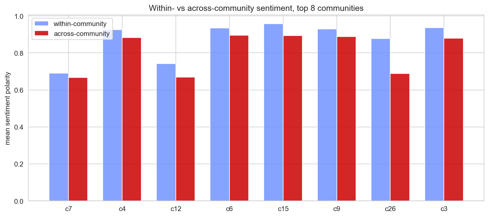
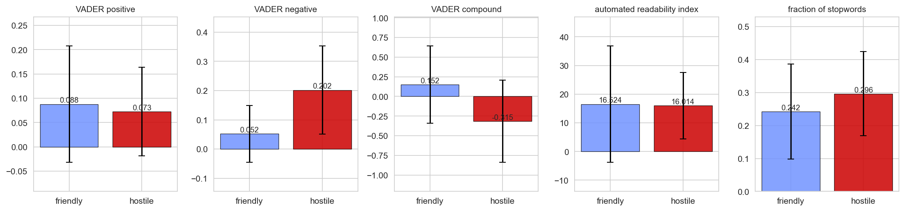
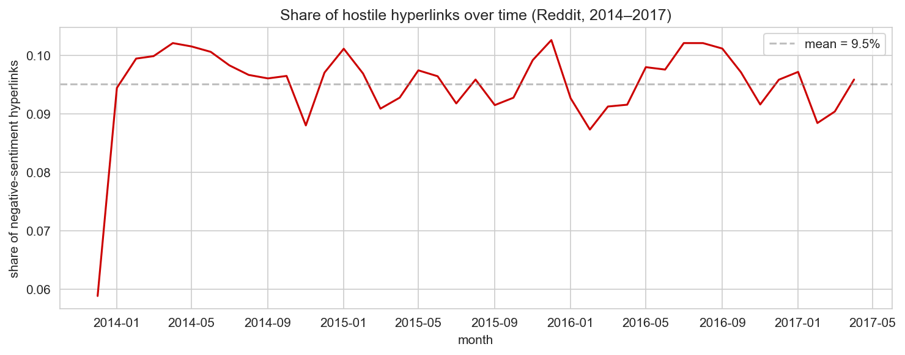

r/NetworkScience
• posted by u/DataStoryteller • 6 hours ago
The Reddit hyperlink network is heavily skewed — γ ≈ 2.2 power-law tail
We turned 858,488 cross-subreddit hyperlinks (Kumar et al., SNAP, 2014–2017) into a directed graph: 67,180 subreddits, 339,643 unique directed pairs, density 7.5 × 10⁻⁵. Fitting a power law to the tail (k ≥ 10) gives γin = 2.14 and γout = 2.24, both with R² > 0.98, well inside the 2 to 3 range typical of online social networks. An equally-sized Erdős–Rényi random graph would peak around ⟨k⟩ ≈ 5 and fall off Poisson-like by k ≈ 15; the real curve reaches k = 5,448 (r/askreddit) and never decays cleanly.
1.2k upvotes
156 comments
A γ between 2 and 3 means infinite variance in the infinite-N limit. Does that show up in your data?
Yep. The top 15 subreddits alone (out of 67k) account for ~10% of all incoming hyperlinks. Mean in-degree is 5, max is 5,448. The average is meaningless as a "typical" value.
Why this matters. A heavy-tailed degree distribution makes the network robust to random failures (deleting a random subreddit barely dents connectivity) but fragile to targeted attacks on the hubs. If r/askreddit or r/subredditdrama disappeared overnight, cross-community linking would look meaningfully different.
r/Subreddit_Stats
• posted by u/TopicalGraph • 1 day ago
Hubs and bridges on Reddit are two very different sets of subreddits
Rank subreddits three ways and you get three different leaderboards. In-degree ≈ the old default front page (askreddit, iama, pics, funny, videos). Out-degree is dominated by meta and drama subs whose whole point is to point at other subs (bestof, subredditdrama, titlegore, drama, hailcorporate). Betweenness mixes the two, but the top bridges are subredditdrama (0.038) and bestof (0.033): exactly the subreddits that exist to route attention between otherwise-disconnected communities. r/the_donald and r/conspiracy show up in both the out-degree and betweenness top-15, which is what aggressive cross-cluster linking looks like.
847 upvotes
92 comments
How fragmented is the network — are these "bridges" actually doing meaningful work?
The largest weakly-connected component is 97.7% of the graph, so the bridges aren't holding two halves together. But the strongly-connected core is only 32%: most niche subs link out to bigger hubs but rarely get linked back.
Method note. Exact betweenness on 67k nodes is computationally infeasible; we use a k=500 vertex sample (NetworkX). This gives reliable rankings of the top hubs but not exact values. The numbers above are the sampled estimate.
r/dataisbeautiful
• posted by u/LouvainFan • 3 days ago
Six recognisable communities fall out of pure graph topology — no manual tagging
Build the positive-sentiment undirected projection (~287k edges), run Louvain, and modularity comes out to Q = 0.549 across 801 communities, well above the 0.3 threshold for "real structure". The top six are surprisingly clean: defaults+drama, gaming, politics, music/arts, science/STEM, europe/history. To label them we ran TF-IDF over the member subreddit names (the SNAP release doesn't include raw post text), splitting CamelCase and underscores into tokens. The distinctive tokens are exactly what you'd hope for: donald/trump/politics for the political cluster, battlefield/ps4/gaming for the gaming cluster, history/europe/eu for the geography cluster.

2.1k upvotes
203 comments
Did you check whether subreddits cluster by friendliness too, not just topic?
Polarity assortativity is close to zero (r ≈ 0.028). Communities are organised by what people post about, not by tone: friendly and slightly-less-friendly subs sit side by side inside the same cluster. The network ↔ text tie-in shows up later (next post), as within- vs across-community sentiment, not as assortativity.
What's striking. The labels emerged with zero external metadata. Louvain looks only at edge weights; TF-IDF looks only at subreddit names. The fact that one cluster screams "donald/trump/conspiracy" while another screams "science/space/brain" is a property of the linking behaviour itself.
r/AskSocialScience
• posted by u/SentimentScout • 5 days ago
Hostility on Reddit is rare (9.5%) but structured — and the language confirms it
Across the whole 2014–2017 period only 9.5% of hyperlinks are labeled negative-sentiment, and that share is almost flat (8.7 to 10.3% band), with no obvious spike around the 2016 US election. But the where matters: every one of the top 8 communities is friendlier internally than it is when linking out. The biggest within-vs-across gap is c26 (the NSFW/LGBT cluster) at +0.189, followed by politics at +0.073 and science at +0.064.

On the linguistic side, hostile posts look genuinely different from friendly ones: VADER compound averages −0.32 for hostile vs +0.15 for friendly (a sign flip and nearly half a unit on a [−1, +1] scale), and VADER-negative is roughly 4× higher in hostile posts.

1.4k upvotes
178 comments
"Hostile-targeted" but polarity > +0.1: is that really hostile?
Good catch: it's a ranking, not an absolute. Reddit linking is ~90% friendly overall, so even the most-hostile-targeted subs come out at positive polarity in absolute terms. The top of the leaderboard (againstmensrights, worstof, nolibswatch, gender_critical, blackladies, climateskeptics) is the kind of ideologically-charged community that attracts disproportionate critical linking.
The tie-in. Communities discovered purely from positive-edge topology turn out to be exactly the communities that protect each other when criticised from outside. In-group is friendlier than out-group, by every measure we checked. Louvain modularity wasn't just finding topical clusters, it was finding social ones.